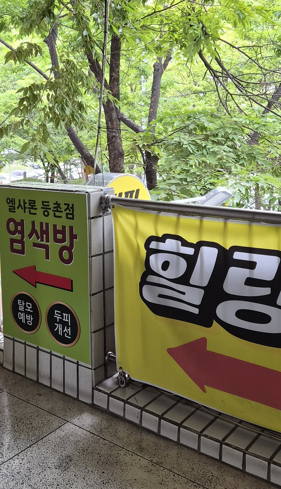
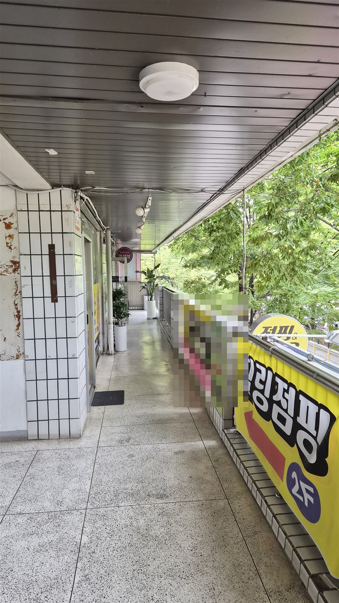
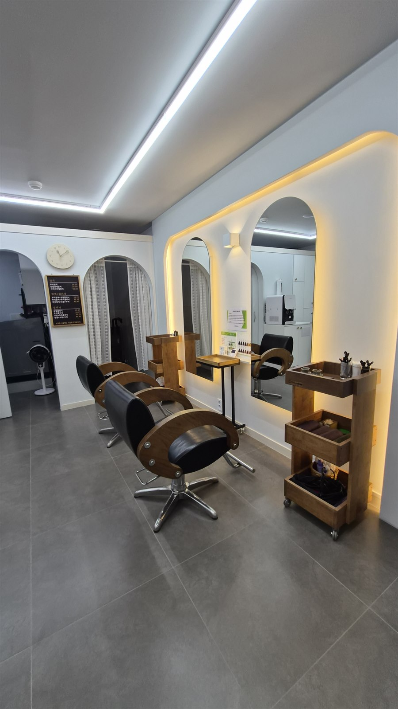
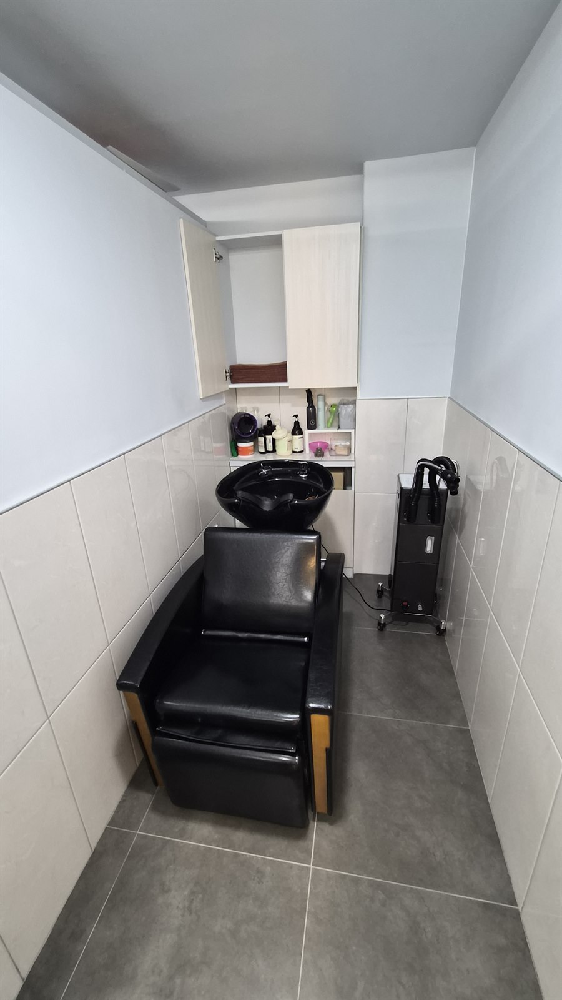
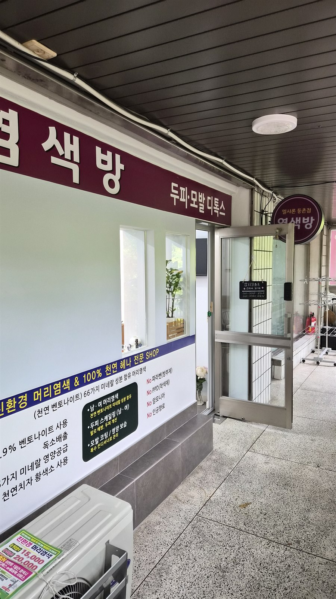
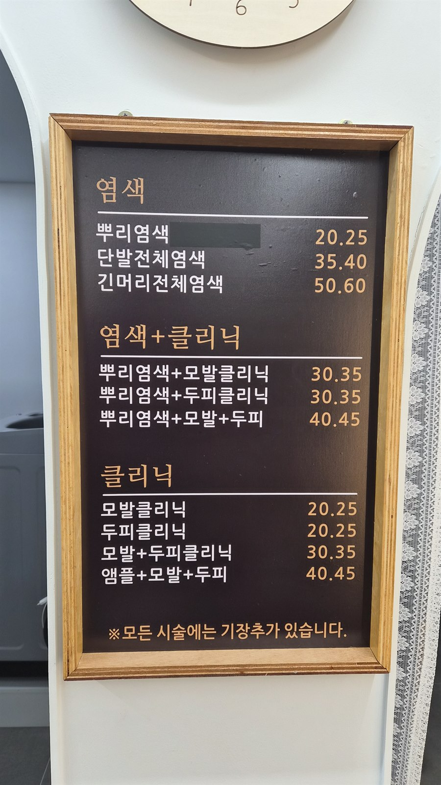
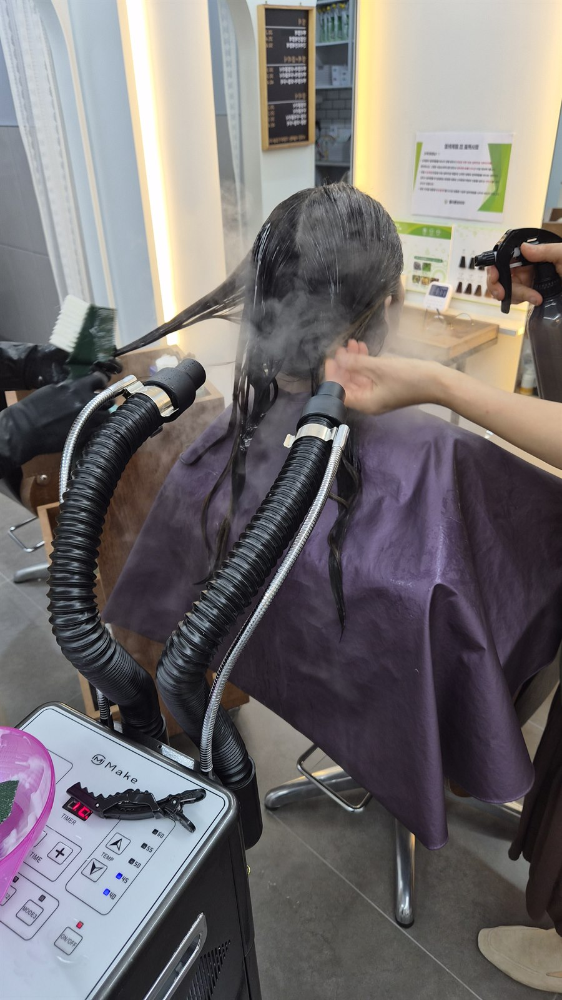
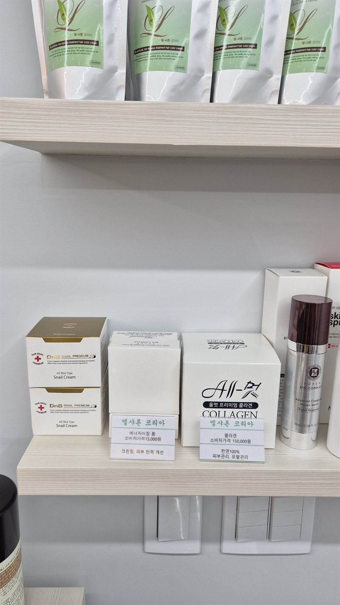

등촌동 염색방 내돈내산 후기, 노암모니아 노PPD 저자극 염색 가격까지
아이 키우면서 제 몸 하나 챙기는 게 왜 이렇게 뒷전이 되는지 모르겠어요. 미용실 예약 하나 잡으려 해도 아이 봐줄 사람부터 구해야 하고, 막상 시간이 나도 서너 시간씩 자리를 비우기가 부담스러워서 자꾸 미루게 되더라고요. 저희 남편도 사정은 비슷했어요. 새치가 눈에 띄게 늘었는데도 "주말에 애 보느라 시간이 없다"는 핑계로 몇 달째 염색을 미루고 있었고, 저는 저대로 머릿결이랑 두피가 방치된 지 오래였고요. 그러던 차에 저희 동네 등촌동에 염색방이 새로 생겼다는 얘기를 듣고, 부부가 큰맘 먹고 같이 다녀왔습니다. 오늘은 그 엘샤론 등촌점 염색방 내돈내산 후기를 솔직하게 남겨볼게요. 미리 말씀드리면 협찬이나 원고료 없이 100% 저희 돈 내고 다녀온 거라, 좋았던 점도 아쉬웠던 점도 눈치 안 보고 다 적어볼게요.

통로에 붙어 있던 유도 배너를 가까이서 담아봤어요. 이거 하나 보고 따라 들어갔어요
직접 촬영한 사진이에요.
골목 안쪽인데, 찾아가는 길은 어렵지 않았어요
엘샤론 등촌점은 서울 강서구 등촌동의 한 건물 1층 아케이드 통로 안쪽에 있어요. 큰길에서 바로 눈에 띄는 자리는 아니고, 통로 초입에 "엘샤론 등촌점 염색방" 화살표 배너가 붙어 있어서 그것만 따라 들어가면 됩니다. 배너 옆엔 "탈모 예방", "두피 개선"이라는 원형 뱃지도 붙어 있었는데, 매장 안내문에 적힌 표현일 뿐 저희가 실제 효과를 봤다는 얘기는 아니니 참고만 해주세요. 아이 하원 시간에 맞추려니 마음이 급했는데, 통로 안쪽이라 처음엔 살짝 헷갈렸어요.

여러 간판이 늘어선 아케이드 통로예요. 이 안쪽으로 들어가면 매장이 나와요
직접 촬영한 사진이에요.
안으로 들어가면, 시술석 2석의 아담한 매장이에요
문을 열고 들어가면 생각보다 아담한 규모예요. 아이 키우다 보면 뭐든 서서 후다닥 해치우는 게 습관이 되는데, 북적이지 않는 공간에 잠깐 조용히 앉아 있는 것만으로도 숨이 돌았어요. 시술석은 딱 2석이고, 아치형 거울 세 개랑 은은한 간접조명, 그레이 톤 타일 바닥이 깔끔한 느낌을 줘요. 신축 인테리어라 그런지 오래된 미용실 특유의 냄새가 전혀 안 나는데요. 원목 트롤리랑 정수기 같은 소품도 정갈하게 놓여 있었어요.

시술석 2석과 아치형 거울, 가격표 보드가 보이는 매장 내부예요
직접 촬영한 사진이에요.
샴푸실도 따로 있어서 위생 부분이 마음에 들었어요
시술석과는 별도로 샴푸실이 한 칸 분리돼 있는데, 세면대랑 의자, 수건 상태까지 깔끔하게 관리되고 있었어요. 육아를 하다 보면 위생 쪽에 예민해질 수밖에 없잖아요. 이 부분은 한결 안심이 되네요.

시술석과 분리된 샴푸실이에요. 세면대·수건 관리가 말끔했어요
직접 촬영한 사진이에요.
제일 마음에 들었던 건 역시 '저자극 염모제'였어요
매장 벽엔 안내문이랑 컬러 차트가 붙어 있는데, 매장 안내문 기준으로 여기서 쓰는 염모제는 이런 성분을 뺐다고 표기돼 있었어요.
- 노 암모니아
- 노 PPD(착색제)
- 노 파라벤(방부제)
- 노 인공향료
정확한 정식 제품명까지는 확인하지 못했지만, 엘샤론 코리아의 저자극 트리트먼트 염모제 정도로 이해하시면 되고요. 천연 벤토나이트랑 미네랄 성분이 들어간다는 안내도 함께 붙어 있었어요. 육아하는 입장에서는 이 부분이 진짜 크게 다가왔어요. 예전에 일반 미용실에서 염색하고 온 날은 아이 안아줄 때마다 머리에서 올라오는 염색약 냄새가 계속 걸렸거든요. 그런데 이번엔 시술받는 동안에도 톡 쏘는 냄새나 눈 시린 느낌이 거의 없었고, 집에 와서 아이 안아줄 때도 마음이 훨씬 편했어요. 다만 냄새가 덜한 건 저희 둘의 체감일 뿐이라, 냄새가 약하다고 성분 자극까지 없는 건 아니니 개인별로 확인이 필요할 것 같아요.
다만 저자극이라고 해서 무자극은 아니라는 점은 짚고 넘어가야 할 것 같아요. 산화염모제이다 보니 패치테스트나 임신·출산 시기와 관련해서는 따로 확인이 필요하다고 안내받았는데, 상담해 주시면서 이 부분을 먼저 솔직하게 짚어주셨어요. 구체적인 내용은 아래 자주 묻는 질문에서 정리할게요.

매장 입구예요. "두피·모발 디톡스" 간판이랑 성분 안내 배너, 연락처 팻말이 같이 보여요
직접 촬영한 사진이에요.
가격표를 그대로 옮겨봤어요
가격은 매장 보드에 붙어 있는 걸 그대로 옮겨봤어요. 숫자 두 개가 나란히 적힌 건 길이나 숱에 따라 두 가지로 안내되는 걸로 보이더라고요. 아래에 매장 가격표 보드 사진도 그대로 올려둘게요. 정확한 견적은 방문 상담이 가장 믿을 만해요.
| 구분 | 메뉴 | 가격 |
|---|---|---|
| 염색 | 뿌리염색 | 20,000 / 25,000원 (남편이 받은 메뉴) |
| 염색 | 단발 전체염색 | 35,000 / 40,000원 |
| 염색 | 긴머리 전체염색 | 50,000 / 60,000원 |
| 염색+클리닉 | 뿌리염색 + 모발클리닉 | 30,000 / 35,000원 |
| 염색+클리닉 | 뿌리염색 + 두피클리닉 | 30,000 / 35,000원 |
| 염색+클리닉 | 뿌리염색 + 모발 + 두피 | 40,000 / 45,000원 |
| 클리닉 | 모발클리닉 | 20,000 / 25,000원 |
| 클리닉 | 두피클리닉 | 20,000 / 25,000원 |
| 클리닉 | 모발 + 두피클리닉 | 30,000 / 35,000원 (제가 받은 메뉴) |
| 클리닉 | 앰플 + 모발 + 두피 | 40,000 / 45,000원 |
보드 하단엔 "모든 시술에는 기장추가가 있습니다"라는 문구도 함께 적혀 있었으니, 머리가 많이 기신 분들은 이 부분도 참고해두시면 좋아요.
저희 부부가 받은 건 남편은 뿌리염색(2만~2만5천원), 저는 모발+두피클리닉(3만~3만5천원)이었는데, 두 개 합쳐도 미용실 한 번 다녀오는 것보다 부담이 훨씬 덜했어요. 게다가 두세 달에 한 번씩 반복되는 시술이니, 1년 단위로 보면 그 차이가 꽤 커지겠더라고요. 아이 용품 사느라 제 관리비는 늘 뒷순위였는데, 이 가격이면 부담 없이 챙길 수 있겠네요.

매장에 실제로 붙어 있는 가격표 보드예요. 위 표는 여기 있는 그대로 옮긴 거예요
직접 촬영한 사진이에요.
실제로 받아본 건 이렇더라고요
남편은 뿌리염색을 받았는데, 시간은 1시간 정도 걸렸고 옆에서 지켜보는 저도 냄새가 거의 안 나서 신기했어요. 저는 모발+두피 클리닉을 받았는데, 스팀기 아래에서 케어를 받는 방식이었고(그때 사진도 아래에 남겨둘게요), 끝나고 나니 두피가 부쩍 시원해지는 느낌이 있었어요. 참고로 저는 염색은 받지 않았고 모발이랑 두피 클리닉만 받은 거라, 새치 염색을 한 건 남편이지 제가 아니라는 점은 정확히 짚고 넘어갈게요.

스팀기 아래에서 모발+두피 클리닉을 받는 중이에요. 이건 제가 받은 시술 장면이고, 염색이 아니라 클리닉이었어요
직접 촬영한 사진이에요.
육아하다 보면 몇 시간씩 자리 비우기가 진짜 힘든데, 이 정도면 충분히 시도해볼 만한 시간이더라고요. 둘 다 걸린 시간이 그렇게 길지 않아서, 아이 맡기고 짬 내서 다녀오기에 부담이 적었어요.
홈케어 제품도 살짝 물어봤어요, 그리고 곡물팩 이야기
시술이 끝나고 나니 홈케어 제품도 몇 가지 보여주셨는데, 무조건 사라고 권하는 느낌은 아니었어요. 평소 쓰는 샴푸랑 두피 상태를 먼저 물어보시고, 필요할 것 같은 것만 성분표 뒷면을 보여주면서 설명해주시는 방식이었고요. 육아하느라 이런 상담도 참 오랜만이었는데, 부부가 번갈아 애 보는 틈에 챙길 수 있어 다행이었어요. 진열대엔 엘샤론 코리아 에너자이징 폼이나 콜라겐 제품 같은 스킨케어 제품도 놓여 있었는데, 콜라겐 제품 가격표를 보고 살짝 눈이 휘둥그레지긴 했어요 ㅎㅎ. 저희는 이날 따로 구매하지는 않았어요.

홈케어 제품 진열대예요. 가격 태그가 같이 붙어 있어요
직접 촬영한 사진이에요.
참, 이 글 보고 오셨다고 말씀드리면 곡물팩 서비스를 해주신다고 하니, 관심 있으시면 참고해두셨다가 방문하실 때 말씀해보세요!
자주 묻는 질문
Q. 예약하고 가야 하나요?
시술석이 2석뿐인 아담한 매장이라 시술 중이면 대기가 생길 수 있어요. 미리 전화로 예약하거나 방문 가능 시간을 확인하고 가시는 걸 추천드려요.
Q. 염색 말고 클리닉만 따로 받을 수도 있나요?
네, 가능해요. 가격표를 보면 모발클리닉·두피클리닉·모발+두피클리닉처럼 염색 없이 클리닉만 받는 메뉴가 따로 있더라고요. 염색 주기는 아직 안 됐는데 머릿결이나 두피만 손보고 싶을 때 따로 받으면 되겠더라고요.
Q. 임신 중이거나 수유 중인데 받아도 되나요?
제품 표시 기준으로 임신 중·임신 가능성·출산 후 회복기는 사용 대상이 아니라고 해요. 수유 중이면 개인 상태에 따라 달라 전문의 상담을 권해드려요. 매장에서도 이 부분을 먼저 솔직하게 안내해주셨어요.
Q. 패치테스트는 꼭 해야 하나요?
산화염모제이다 보니 제품 표시상 매회 염색 48시간 전 패치테스트를 안내하고 있다고 해요. 저자극이라고 해도 생략하지 않고 챙기시는 게 좋을 것 같아요. 공공기관 소비자 정보 사이트인 소비자24 「염모제 사용 전 패치테스트 하세요!」 안내에도 팔 안쪽이나 귀 뒤에 바르고 48시간 동안 반응을 보라고, 예전에 괜찮았더라도 체질이 바뀔 수 있으니 매번 하라고 나와 있더라고요.
Q. 컬러는 어떻게 골라야 하나요?
매장 컬러 차트를 보면서 상담받고 고르면 되는데, 색상마다 방치 시간이 15~40분 정도로 조금씩 다르다고 안내받았어요. 원하는 톤이 있으면 상담할 때 미리 말씀하시면 좋아요.
솔직하게 아쉬웠던 점도 남겨볼게요
좋은 점만 늘어놓으면 재미없으니 아쉬웠던 부분도 정리해볼게요. 통로 안쪽이라 초행이시면 한 번은 두리번거리게 되더라고요. 가격표 두 금액 기준이 보드에 따로 적혀 있지 않아서 방문 전에 견적 잡기가 애매했어요. 시술석도 2석뿐이라 시간대에 따라 대기가 생길 수 있으니 전화 확인은 꼭 하고 가세요. 아, 염색 색이 얼마나 잘 잡혔는지까지는 이번 글에 못 담았어요. 그날 남은 사진이 시술 중인 것뿐이라서요.
정리하면, 등촌동에서 저자극 염색이나 두피 케어 받을 곳 찾으시는 분들, 특히 저희처럼 아이 안아줄 일 많은 부모님들이라면 한 번쯤 가보셔도 좋을 것 같아요. 가격 부담도 적고 시술 시간도 짧아서 육아 중 짬 내기에도 괜찮은데요. 매장은 서울 강서구 등촌동 한 건물 1층 아케이드 통로 안쪽에 있고, 연락처는 010-2000-8924 또는 010-2360-6935예요. 방문 전 전화로 한 번 확인하고 가시는 걸 추천드려요.